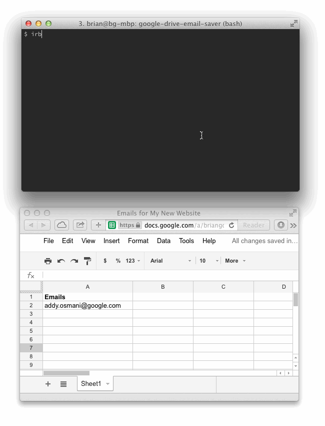

Google Drive + Ruby
Whenever it comes time for me to build a landing page or something similar where I am going to capture email addresses, I always survey the landscape for what’s currently out there. I am typically never happy with what I find.
There’s Wufoo, Formstack, or even Google Forms – but each of these solutions requires embedding one of their forms into your page. This means a loss of control over styling and functionality, and it also means you’ll likely end up with their branding all over your page.
I recently began building a landing page for NCM Engineering Corporation, and I devised a solution for saving email addresses straight to Google Drive. It’s called google-drive-email-saver, and it relies heavily on a Ruby gem called google-drive-ruby which is a very robust and powerful way to programmatically interact with Google Drive.
How to use
Here’s a small snippet which shows just how easy it is to write an email address to a spreadsheet in Google Drive.
require './google-drive-email-saver.rb'
# where 8675309abcdef is the spreadsheet key
g = GoogleDriveEmailSaver.new('me@gmail.com', 'passwd123456', '8675309abcdef')
g.save_email('person.who@justsignedup.com')Once you’re done capturing email addresses, it’s incredibly easy to export all of them to a CSV file from the Google Drive interface.
Demo

Questions?
Feel free to contact me @brianmgonzalez